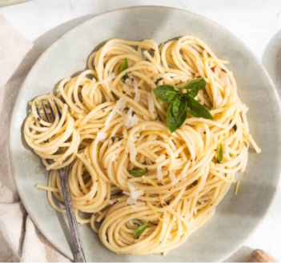

This is a simple and delicious garlic butter pasta recipe.

Description:
Flavor Profile
Savory, cheesy, and smoky. Melty cheese binds together sautéed peppers, onions, and black beans, enhanced by a warm hint of earthy cumin and mild chili.
Culinary Context
Inspired by traditional Mexican street food culture, the quesadilla is an adaptable comfort food staple designed to transform everyday ingredients into a fast, satisfying meal.